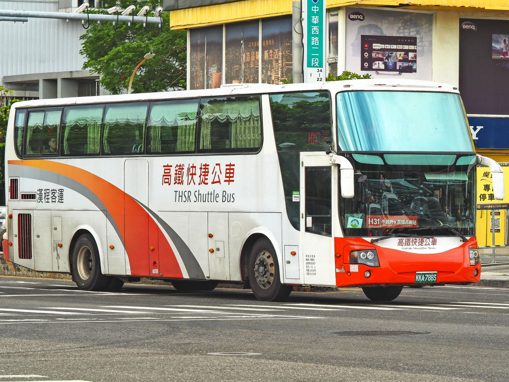
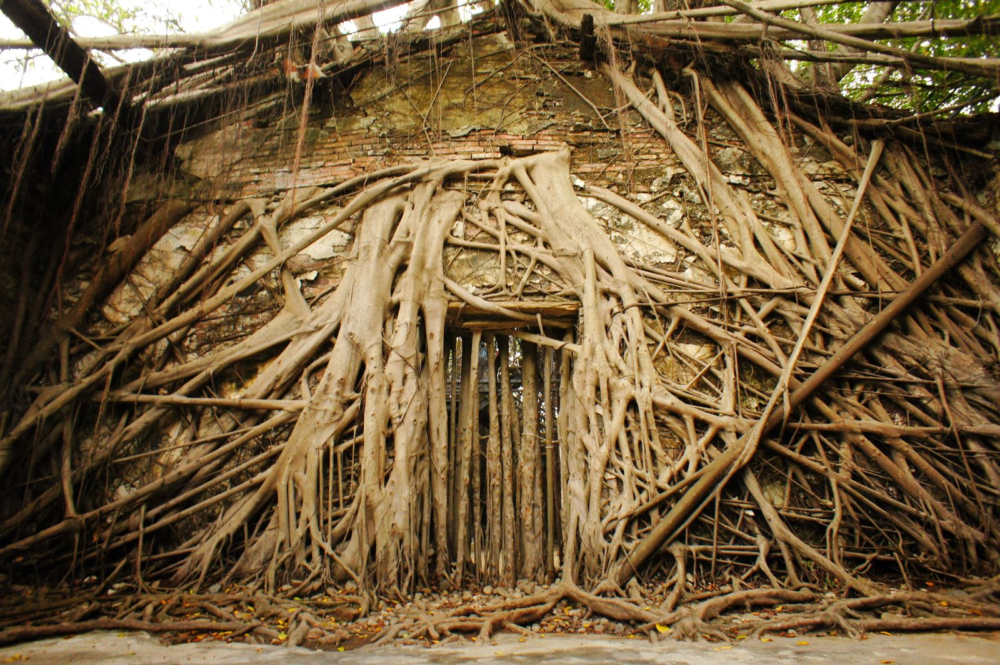
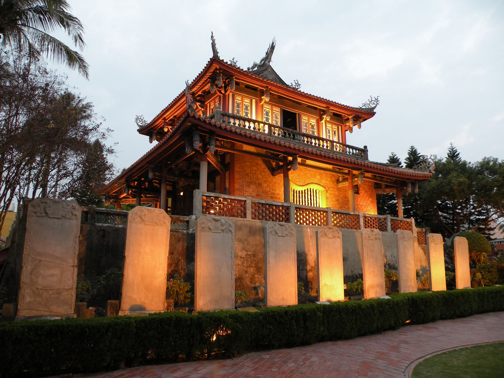

타이난 고속철 당일치기, 가오슝에서 H31·안핑까지
고속철 타이난역은 시내에서 멀어요. H31 무료 셔틀로 들어가 안핑은 17:30 전에, 츠칸러우는 저녁에 보세요.
게시
가오슝 쭤잉(左營)에서 고속철을 타면 타이난역까지 표준석 NT$140이에요(2026년 11월 기준). 고속철 타이난역은 시내와 떨어져 있어서, 당일 고속철 승차권이 있으면 무료인 H31 셔틀로 공자묘 근처까지 들어가는 게 편해요. 안핑구바오·안핑수옥은 17:30에 닫으니 오후에 먼저 보고, 21:30까지 여는 츠칸러우는 저녁에 보면 돼요.
여행자 커뮤니티에 올라온 동선을 고속철·타이난시 공식 안내로 확인해 정리해봤어요.
01 · 하루 동선 한눈에 보기
| 시간대 | 어디로 | 확인할 점 (2026년 11월 기준) |
|---|---|---|
| 오전 | 쭤잉 → 고속철 타이난역 | 표준석 NT$140, 자유석 NT$135 |
| 오전~점심 | H31 → 建興國中(府前路) 하차, 공자묘 | 공자묘 08:30~17:20, 매표 17:00까지 |
| 오후 | 택시·유바이크로 안핑 | 안핑구바오·안핑수옥 08:30~17:30 |
| 저녁 | 츠칸러우 → 고속철역 | 츠칸러우 08:30~21:30 |
원글은 안핑을 먼저, 츠칸러우를 나중에 보라고 했어요. 문을 닫는 시간이 다르기 때문이에요. 타이난시 문화자산관리처 개방시간표에 따르면 안핑구바오(安平古堡)와 안핑수옥(安平樹屋)은 08:30~17:30, 츠칸러우(赤崁樓)는 08:30~21:30이에요. 그래서 낮에는 공자묘와 안핑, 해가 진 뒤에는 시내의 츠칸러우를 보는 순서가 시간을 덜 버려요.
02 · 쭤잉에서 고속철 타이난역까지
台灣高鐵 공식 운임표 기준으로 쭤잉~타이난 표준석 성인 요금은 NT$140, 자유석(自由座)은 NT$135예요(2026년 11월 기준). 자유석 표는 표에 적힌 날짜에만 쓸 수 있고, 차편과 좌석을 지정하지 않으며 자유석 칸에만 탈 수 있어요. 출발 시각은 고속철 공식 사이트의 시간표 조회에서 확인하세요.
03 · H31 무료 셔틀 타는 법
1번 승강장에서 타요 고속철 공식 안내에 따르면 H31은 타이난역 버스 1번 승강장(第1月台)에서 출발해요. 고속철역 출발은 06:35~24:00, 15~30분 간격이에요.
당일 고속철 승차권이 있으면 무료 고속철역에서 타거나 내리는 고속철 승객은 무료예요. 당일 고속철 승차권을 보여줘야 하니 내린 뒤에도 버리지 마세요.
그 밖의 승객은 유료 타이난시 버스 사이트에 따르면 고속철 승객이 아니면 구간에 따라 NT$18 또는 NT$36을 내요. 고속도로 구간은 입석이 안 돼요.
공자묘는 建興國中(府前路)에서 H31은 치메이 박물관, 延平郡王祠를 지나 建興國中(府前路)·小西門·市政中心으로 가요. 臺南市美術館 교통 안내도 建興國中을 공자묘 정류장으로 안내해요. 노선 전체는 약 50분이에요.

기차가 편하다면 고속철역 2층 통로로 대만철도 사룬(沙崙)역에 가서 사룬선으로 타이난역까지 갈 수도 있어요. 다만 타이난역에서 공자묘·안핑까지는 다시 이동해야 해서, 공자묘부터 볼 생각이면 H31이 더 단순해요. 차편은 대만철도 시간표에서 확인하세요.
04 · 공자묘와 안핑은 오후 5시 반 전에
臺南孔廟 공식 안내에 따르면 공자묘(孔廟)는 08:30~17:20에 열고, 표는 東大成坊 입구에서 17:00까지 팔아요. 금·토요일은 21:00까지 열어요. 2026년 1월 30일부터 전체 구역이 유료가 되어 성인 NT$70이에요. 안핑구바오·안핑수옥·억재금성(億載金城)도 개방시간표상 08:30~17:30이고, 성인 요금은 NT$70이에요(2026년 11월 기준).
공자묘 근처에서 안핑까지는 택시나 유바이크로 가는 여행자가 많아요. 고속철역에서 바로 안핑으로 가고 싶다면, 고속철 공식 안내에 나온 32번(高鐵台南站~安平漁人碼頭) 일반 시내버스가 3번 승강장에서 출발해요. 이 노선은 H31과 달리 일반 요금을 내요.

05 · 저녁 츠칸러우, 돌아가는 길
츠칸러우는 21:30까지 개방시간표 기준 08:30~21:30이라 안핑을 본 뒤 저녁에 가도 돼요. 주소는 中西區 民族路二段212號예요.
돌아갈 땐 小西門이나 建興國中에서 H31 고속철역 방향은 시내 정류장에서 타요. 막차 시각은 타이난시 버스 사이트에서 미리 확인하세요.
무료 조건 다시 확인 무료는 당일 고속철 승차권 확인이 조건이에요. 돌아가는 고속철 표를 미리 사 두면 확인받기 편해요.
고속철 타이난역은 24:00까지 고속철 공식 안내 기준 역 운영은 05:45~24:00이에요. 쭤잉행 마지막 차편은 시간표 조회로 확인하세요.

06 · 자주 묻는 질문
쭤잉에서 타이난까지 고속철 요금은 얼마예요? 2026년 11월 기준 성인 표준석 NT$140, 자유석 NT$135예요.
H31 셔틀은 누구나 무료예요? 아니요. 당일 고속철 승차권이 있는 고속철 승객만 무료이고, 다른 승객은 구간에 따라 NT$18 또는 NT$36을 내요.
공자묘에 가려면 H31 어디서 내려요? 建興國中(府前路) 정류장에서 내리면 돼요. 臺南市美術館도 이 정류장을 공자묘 정류장으로 안내해요.
안핑과 츠칸러우 중 어디를 먼저 가요? 안핑구바오·안핑수옥은 17:30, 츠칸러우는 21:30에 닫아서 안핑을 먼저 보는 게 좋아요.
H31이 안핑까지 가요? 아니요. H31은 시내 市政中心 방향으로 가요. 안핑은 시내에서 택시·유바이크로 가거나, 고속철역에서 32번 시내버스를 타요.
타이난 시내에서 먹을 곳은 타이난 맛집 지도와 타이난 대만식 맛집에서 골라보세요. 안핑구바오 근처라면 지도에 있는 同記安平豆花 安平2店도 볼 수 있어요. 쭤잉역 환승과 식사는 쭤잉 고속철 환승 가이드, 사룬선과 타이난역 출구는 타이난역 지하화 후 이용법, 안핑까지 자전거는 가오슝·타이난 유바이크 팁에 정리해 두었어요. H31이 지나는 치메이 박물관은 치메이 박물관 글을 참고하세요.
지도에서 타이난 맛집도 확인해보세요
공자묘·츠칸러우 근처에서 먹을 곳을 지도에서 골라보세요.